수산물품질관리사-1차 (2020-07-18 기출문제)
1과목: 수산물품질관리 관련법령
1. 농수산물 품질관리법 제2조(정의)의 일부 규정이다. ( )에 들어갈 내용이 순서대로 옳은 것은?
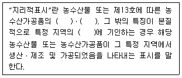
- 명성, 품질, 지리적 특성
- 명성, 품질, 생산자 인지도
- 유명도, 안전성, 지리적 특성
- 유명도, 안전성, 생산자 인지도
(정답률: 94%)

2. 농수산물 품질관리법상 농수산물품질관리심의회의 심의사항으로 명시되지 않은 것은?
- 수산물품질인증에 관한 사항
- 수산물의 안전성조사에 관한 사항
- 유기식품등의 인증에 관한 사항
- 수산가공품의 검사에 관한 사항
(정답률: 87%)
3. 농수산물 품질관리법령상 수산물품질인증의 기준이 아닌 것은?
- 해당 수산물의 생산ㆍ출하 과정에서의 자체 품질관리체제와 유통 과정에서의 사후관리체제를 갖추고 있을 것
- 해당 수산물의 품질 수준 확보 및 유지를 위한 생산기술과 시설ㆍ자재를 갖추고 있을 것
- 해당 수산물이 그 산지의 유명도가 높거나 상품으로서의 차별화가 인정되는 것일 것
- 해당 수산물이 그 산지에 주소를 둔 사람이 생산하였을 것
(정답률: 83%)
4. 농수산물 품질관리법상 수산물 품질인증기관의 지정 등에 관한 내용이다. ( )에 들어갈 내용으로 옳은 것은?
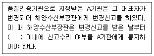
- 10일
- 14일
- 15일
- 1개월
(정답률: 64%)
5. 농수산물 품질관리법상 해양수산부장관이 지리적표시품의 품질수준 유지와 소비자 보호를 위하여 관계 공무원에게 지시할 수 있는 사항으로 명시되지 않은 것은?
- 지리적표시품의 등록기준에의 적합성 조사
- 지리적표시품 판매계획서의 적합성 조사
- 지리적표시품 소유자의 관계 장부의 열람
- 지리적표시품의 시료를 수거하여 조사
(정답률: 50%)
6. 농수산물 품질관리법령상 시ㆍ도지사가 지정해역을 지정받기 위해 해양수산부장관에게 요청하는 경우, 갖추어야 하는 서류를 모두 고른 것은?
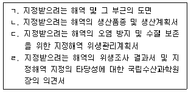
- ㄱ, ㄴ
- ㄴ, ㄹ
- ㄱ, ㄷ, ㄹ
- ㄱ, ㄴ, ㄷ, ㄹ
(정답률: 57%)
7. 농수산물 품질관리법상 식품의약품안전처장이 수산물의 품질 향상과 안전한 수산물의 생산ㆍ공급을 위해 수립하는 안전관리계획에 포함하여야 하는 사항으로 명시되지 않은 것은?
- 위험평가
- 안전성조사
- 어업인에 대한 교육
- 수산물검사기관의 지정
(정답률: 36%)
8. 농수산물 품질관리법령상 수산물 및 수산가공품에 대한 검사 중 관능검사의 대상이 아닌 것은?
- 정부에서 수매하는 수산물
- 정부에서 비축하는 수산가공품
- 국내에서 소비하는 수산가공품
- 검사신청인이 위생증명서를 요구하는 비식용수산물
(정답률: 75%)
9. 농수산물 품질관리법상 수산물품질관리사의 직무로 명시되지 않은 것은?
- 수산물의 등급 판정
- 수산물우수관리인증시설의 위생 지도
- 수산물의 생산 및 수확 후 품질관리기술 지도
- 수산물의 출하 시기 조절, 품질관리기술에 관한 조언
(정답률: 47%)
10. 농수산물 품질관리법상 벌칙 기준이 ‘3년 이하의 징역 또는 3천만원 이하의 벌금’에 해당 하지 않는 자는?
- 품질인증품의 표시를 한 수산물에 품질인증품이 아닌 수산물을 혼합하여 판매하는 행위를 한 자
- 지리적표시품이 아닌 수산물 또는 수산가공품의 포장ㆍ용기ㆍ선전물 및 관련 서류에 지리적 표시를 한 자
- 수산물품질관리사의 명의를 사용하게 하거나 그 자격증을 빌려준 자
- 검사를 받아야 하는 수산물 및 수산가공품에 대하여 검사를 받지 아니한 자
(정답률: 60%)
11. 농수산물 유통 및 가격안정에 관한 법령상 중앙도매시장이 아닌 것은?
- 울산광역시 농수산물도매시장
- 대전광역시 오정 농수산물도매시장
- 대구광역시 북부 농수산물도매시장
- 서울특별시 강서 농수산물도매시장
(정답률: 63%)
12. 농수산물 유통 및 가격안정에 관한 법률상 도매시장 개설자가 거래관계자의 편익과 소비자 보호를 위하여 이행하여야 하는 사항으로 명시되지 않은 것은?
- 도매시장 시설의 정비ㆍ개선과 합리적인 관리
- 경쟁 촉진과 공정한 거래질서의 확립 및 환경 개선
- 상품성 향상을 위한 규격화, 포장 개선 및 선도(鮮度) 유지의 촉진
- 유통명령 위반자에 대한 제재 등 필요한 조치
(정답률: 53%)
13. 농수산물 유통 및 가격안정에 관한 법률 제44조(공판장의 거래 관계자) 제1항 규정이다. ( )에 들어갈 내용으로 옳지 않은 것은?
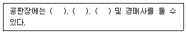
- 산지유통인
- 시장도매인
- 중도매인
- 매매참가인
(정답률: 54%)
14. 농수산물 유통 및 가격안정에 관한 법령상 주요 농수산물의 생산지역이나 생산수면(이하 “주산지”라 한다)의 지정 및 해제 등에 관한 내용으로 옳지 않은 것은?
- 시ㆍ도지사는 농수산물의 경쟁력 제고를 위해 주산지에서 주요 농수산물을 판매하는 자에 게 자금의 융자 등 필요한 지원을 하여야 한다.
- 시ㆍ도지사는 주산지를 지정하였을 때에는 이를 고시하고 농림축산식품부장관 또는 해양수산부장관에게 통지하여야 한다.
- 시ㆍ도지사는 지정된 주산지가 지정요건에 적합하지 아니하게 되었을 때에는 그 지정을 변경하거나 해제할 수 있다.
- 주산지의 지정은 읍ㆍ면ㆍ동 또는 시ㆍ군ㆍ구 단위로 한다.
(정답률: 63%)
15. 농수산물 유통 및 가격안정에 관한 법령상 유통자회사가 유통의 효율화를 도모하기 위해 수행하는 “그 밖의 유통사업”의 범위에 해당하는 것을 모두 고른 것은?
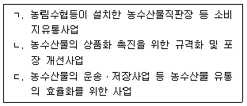
- ㄱ, ㄴ
- ㄱ, ㄷ
- ㄴ, ㄷ
- ㄱ, ㄴ, ㄷ
(정답률: 42%)
16. 농수산물의 원산지 표시에 관한 법령상 대통령령으로 정하는 집단급식소를 설치ㆍ운영하는 자가 수산물을 조리하여 제공하는 경우, 그 원산지를 표시하여야 하는 것을 모두 고른 것은?
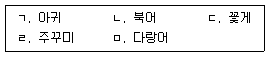
- ㄱ, ㄴ, ㄹ
- ㄴ, ㄷ, ㅁ
- ㄱ, ㄷ, ㄹ, ㅁ
- ㄴ, ㄷ, ㄹ, ㅁ
(정답률: 75%)
17. 농수산물의 원산지 표시에 관한 법령상 포장재에 원산지를 표시할 수 있는 경우, 수산물의 원산지 표시방법에 관한 내용으로 옳지 않은 것은?
- 위치는 소비자가 쉽게 알아볼 수 있는 곳에 표시한다.
- 포장 표면적이 3,000cm2이상이면 글자 크기는 12포인트 이상으로 한다.
- 글자색은 포장재의 바탕색 또는 내용물의 색깔과 다른 색깔로 선명하게 표시한다.
- 문자는 한글로 하되, 필요한 경우에는 한글 옆에 한문 또는 영문 등으로 추가하여 표시할 수 있다.
(정답률: 57%)
18. 농수산물의 원산지 표시에 관한 법률상 수산물의 원산지 표시 위반에 대한 과징금의 부과 및 징수에 관한 내용이다. ( )에 들어갈 숫자가 순서대로 옳은 것은?
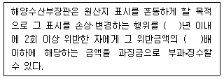
- 2, 5
- 2, 10
- 3, 20
- 3, 30
(정답률: 65%)
19. 농수산물의 원산지 표시에 관한 법령상 A업소에 부과될 과태료는? (단, 과태료의 감경사유는 고려하지 않음)
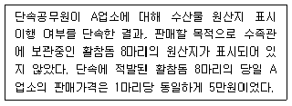
- 30만원
- 40만원
- 60만원
- 100만원
(정답률: 47%)
20. 농수산물의 원산지 표시에 관한 법률상 원산지 표시를 거짓으로 한 자에 대하여 위반 수산물의 판매 행위 금지의 처분을 할 수 있는 자에 해당하지 않는 것은?
- 해양수산부장관
- 관세청장
- 국세청장
- 시ㆍ도지사
(정답률: 54%)
21. 친환경농어업 육성 및 유기식품 등의 관리ㆍ지원에 관한 법령상 해양수산부장관이 어업 자원·환경 및 친환경어업 등에 관한 실태조사ㆍ평가를 하게 할 수 있는 자를 모두 고른 것은?
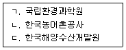
- ㄱ, ㄴ
- ㄱ, ㄷ
- ㄴ, ㄷ
- ㄱ, ㄴ, ㄷ
(정답률: 60%)
22. 친환경농어업 육성 및 유기식품 등의 관리ㆍ지원에 관한 법령상 무항생제수산물등의 인증에 관한 내용으로 옳지 않은 것은?
- 인증을 받으려는 자는 인증신청서에 필요 서류를 첨부하여 국립수산물품질관리원장 또는 지정받은 인증기관의 장에게 제출하여야 한다.
- 활성처리제 비사용 수산물을 생산하는 자는 인증대상에 포함되지 않는다.
- 인증기준에 관한 세부 사항은 국립수산물품질관리원장이 정하여 고시한다.
- 인증기관의 인증 종류에 따른 인증업무의 범위는 무항생제수산물등을 생산하는 자 및 취급하는 자에 대한 인증이다.
(정답률: 50%)
23. 수산물 유통의 관리 및 지원에 관한 법령상 수산물을 생산하는 자가 수산물 이력추적 관리를 받기 위해 등록하여야 하는 사항에 해당하지 않는 것은?
- 생산계획량
- 생산자의 성명, 주소 및 전화번호
- 유통자의 명칭, 주소 및 전화번호
- 양식수산물 및 천일염의 경우 양식장 및 염전의 위치
(정답률: 50%)
24. 수산물 유통의 관리 및 지원에 관한 법률상 위판장의 수산물 매매방법 및 대금 결제에 관한 내용으로 옳은 것은?
- 대금의 지급방법에 관하여 위판장개설자와 출하자 사이에 특약이 있는 경우에는 그 특약에 따른다.
- 출하자가 서면으로 거래 성립 최저가격을 제시한 경우, 위판장개설자의 동의를 얻어 그 가격 미만으로 판매 할 수 있다.
- 경매 또는 입찰의 방법은 거수수지식(擧手手指式)을 원칙으로 한다.
- 대금결제에 관한 구체적인 절차와 방법, 수수료 징수에 관하여 필요한 사항은 대통령령으로 정한다.
(정답률: 57%)
25. 수산물 유통의 관리 및 지원에 관한 법률 제41조(비축사업 등) 제1항 규정이다. ( )에 들어갈 내용이 순서대로 옳은 것은?
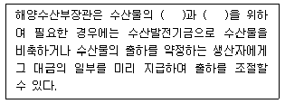
- 수급조절, 가격안정
- 수급조절, 소비촉진
- 품질향상, 가격안정
- 품질향상, 소비촉진
(정답률: 79%)
2과목: 수산물유통론
26. 국내 수산물 유통에서 통용되고 있는 거래관행이 아닌 것은?
- 선물거래제
- 전도금제
- 경매ㆍ입찰제
- 위탁판매제
(정답률: 67%)
27. 수산물 유통 특징 중 가격변동성의 원인에 해당되지 않는 것은?
- 생산의 불확실성
- 어획물의 다양성
- 높은 부패성
- 계획적 판매의 용이성
(정답률: 65%)
28. 강화군의 A영어법인이 봄철에 어획한 꽃게를 저장하였다가 가을철에 노량진 수산물도매시장에 판매하였을 때, 수산물 유통의 기능으로 옳지 않은 것은? (단, 주어진 정보로만 판단함)
- 운송기능
- 선별기능
- 보관기능
- 거래기능
(정답률: 63%)
29. 수산물 유통의 상적 유통기능은?
- 운송기능
- 보관기능
- 구매기능
- 가공기능
(정답률: 74%)
30. 다음 중 공영도매시장에 관해 옳게 말한 사람을 모두 고른 것은?
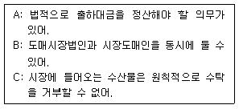
- A, B
- A, C
- B, C
- A, B, C
(정답률: 57%)
31. 수산물산지위판장에 관한 설명으로 옳지 않은 것은?
- 주로 연안에 위치한다.
- 수의거래를 위주로 한다.
- 양륙과 배열 기능을 수행한다.
- 판매 및 대금결제 기능을 수행한다.
(정답률: 83%)
32. 소비지 공영도매시장의 경매 진행절차이다. ( )에 들어갈 내용으로 옳은 것은?
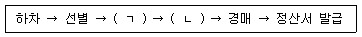
- ㄱ: 판매원표 작성, ㄴ: 수탁증 발부
- ㄱ: 판매원표 작성, ㄴ: 송품장 발부
- ㄱ: 수탁증 발부, ㄴ: 판매원표 작성
- ㄱ: 수탁증 발부, ㄴ: 송품장 발부
(정답률: 50%)
33. 다음에서 (ㄱ)총 계통출하량과 (ㄴ)총 비계통출하량으로 옳은 것은? (단, 주어진 정보로만 판단함)
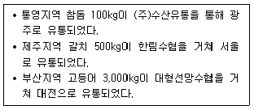
- ㄱ: 100kg, ㄴ: 3,500kg
- ㄱ: 500kg, ㄴ: 3,100kg
- ㄱ: 3,000kg, ㄴ: 600kg
- ㄱ: 3,500kg, ㄴ: 100kg
(정답률: 65%)
34. 다음 그림은 국내 양식 어류의 생산량(톤, 2018년)을 나타낸 것이다. ( )에 들어갈 어종은?
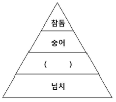
- 민어
- 조피볼락
- 방어
- 고등어
(정답률: 73%)
35. 선어 유통에 관한 설명으로 옳은 것을 모두 고른 것은?
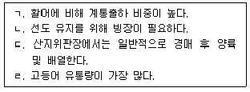
- ㄱ, ㄴ
- ㄱ, ㄷ
- ㄱ, ㄴ, ㄹ
- ㄴ, ㄷ, ㄹ
(정답률: 47%)
36. 최근 국내 수입 연어류에 관한 설명으로 옳은 것을 모두 고른 것은?
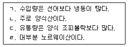
- ㄱ, ㄴ
- ㄱ, ㄷ
- ㄱ, ㄴ, ㄹ
- ㄴ, ㄷ, ㄹ
(정답률: 54%)
37. 냉동 수산물 유통에 관한 설명으로 옳은 것은?
- 산지위판장을 경유하는 유통이 대부분이다.
- 유통 과정에서의 부패 위험도가 높다.
- 연근해수산물이 대다수를 차지한다.
- 냉동창고와 냉동탑차를 주로 이용한다.
(정답률: 67%)
38. 수산가공품 유통의 장점이 아닌 것은?
- 수송이 편리하다.
- 수산물 본연의 맛과 질감을 유지할 수 있다.
- 저장성이 높아 장기보관이 가능하다.
- 제품의 규격화가 용이하다.
(정답률: 80%)
39. 양식 넙치의 유통에 관한 설명으로 옳지 않은 것은?
- 국내 양식 어류 생산량 중 가장 많다.
- 주로 횟감용으로 소비되며, 대부분 활어로 유통된다.
- 공영도매시장보다 유사도매시장을 경유하는 경우가 많다.
- 최대 수출대상국은 미국이며, 대부분 활어로 수출되고 있다.
(정답률: 74%)
40. 다음 ( )에 들어갈 옳은 내용은?
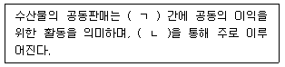
- ㄱ: 생산자, ㄴ: 산지위판장
- ㄱ: 유통자, ㄴ: 공영도매시장
- ㄱ: 유통자, ㄴ: 유사도매시장
- ㄱ: 생산자, ㄴ: 전통시장
(정답률: 58%)
41. 수산물 전자상거래에 관한 설명으로 옳지 않은 것은?
- 유통경로가 상대적으로 짧아진다.
- 구매자 정보를 획득하기 어렵다.
- 거래 시간ㆍ공간의 제약이 없다.
- 무점포 운영이 가능하다.
(정답률: 72%)
42. 다음 (ㄱ)~(ㄹ) 중 옳지 않은 것은?
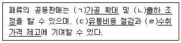
- ㄱ
- ㄱ, ㄴ
- ㄴ, ㄷ, ㄹ
- ㄱ, ㄴ, ㄷ, ㄹ
(정답률: 69%)
43. 국내 수산물 가격 폭락의 원인이 아닌 것은?
- 생산량 급증
- 수산물 안전성 문제 발생
- 수입량 급증
- 국제 유류가격 급등
(정답률: 74%)
44. 수산물 산지단계에서 중도매인이 부담하는 비용은?
- 상차비
- 양륙비
- 위판수수료
- 배열비
(정답률: 38%)
45. 올해 2월 제주산 넙치 산지가격은 코로나19 영향으로 kg당 9,000원이었으나, 드라이브스루 등 다양한 소비촉진 활동의 영향으로 7월 현재는 12,000원으로 올랐다. 그러나 소비지 횟집에서는 1년 전부터 kg당 30,000원에 판매되고 있다. 그렇다면 현재 제주산넙치의 유통마진율(%)은 2월보다 얼마만큼 감소했는가?
- 3%포인트
- 5%포인트
- 10%포인트
- 20%포인트
(정답률: 60%)
46. 오징어 1상자(10 kg) 가격과 비용구조가 다음과 같다. 판매자의 (ㄱ)가격결정방식과 그에 해당하는 (ㄴ)가격은?
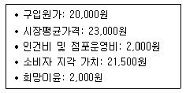
- ㄱ: 원가중심가격결정, ㄴ: 22,000원
- ㄱ: 가치가격결정, ㄴ: 23,500원
- ㄱ: 약탈적 가격결정, ㄴ: 25,000원
- ㄱ: 경쟁자 기준 가격결정, ㄴ: 23,000원
(정답률: 47%)
47. 경품이나 할인쿠폰 등을 제공하는 수산물 판매촉진활동의 효과는?
- 장기적으로 매출을 증대시킬 수 있다.
- 신상품 홍보와 잠재고객을 확보할 수 있다.
- 고급브랜드의 이미지를 구축할 수 있다.
- PR에 비해 비용이 저렴하다.
(정답률: 65%)
48. 전복의 수요변화에 관한 내용이다. ( )에 들어갈 옳은 내용은?
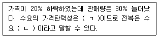
- ㄱ: 0.75, ㄴ: 비탄력적
- ㄱ: 1.0, ㄴ: 단위탄력적
- ㄱ: 1.5, ㄴ: 탄력적
- ㄱ: 1.75, ㄴ: 탄력적
(정답률: 54%)
49. 수산식품 안전성 확보 제도와 관련이 없는 것은?
- 총허용어획량제도(TAC)
- 수산물원산지표시제도
- 친환경수산물인증제도
- 수산물이력제도
(정답률: 67%)
50. 수산물 유통정보의 조건이 아닌 것은?
- 신속성
- 정확성
- 주관성
- 적절성
(정답률: 77%)
3과목: 수확후 품질관리론
51. 수산물의 품질관리를 위한 물리ㆍ화학적 및 관능적 항목에 해당하지 않는 것은?
- 노로바이러스
- 히스타민
- 2 mm 이상의 금속성 이물
- 고유의 색택과 이미ㆍ이취
(정답률: 65%)
52. 혈합육과 보통육의 비교에 관한 설명으로 옳지 않은 것은?
- 혈합육은 보통육보다 미오글로빈이나 헤모글로빈 등 헴(heme)을 가지는 색소단백질이 많다.
- 혈합육은 보통육보다 조단백질 함량이 적다.
- 혈합육은 보통육보다 지질 함량이 많다.
- 혈합육은 보통육보다 철, 황, 구리의 함량이 적다.
(정답률: 67%)
53. 어패류가 육상동물육에 비해 변질되기 쉬운 원인으로 옳지 않은 것은?
- 효소활성이 강하다.
- 지질 중 고도불포화지방산의 비율이 낮다.
- 근육 조직이 약하다.
- 어획시 상처 등으로 세균 오염의 기회가 많다.
(정답률: 72%)
54. 어는점에 관한 설명으로 옳지 않은 것은?
- 수산물의 어는점은 0℃보다 낮다.
- 냉장 굴비가 생조기보다 높다.
- 명태 연육이 순수 명태 페이스트보다 낮다.
- 얼기 시작하는 온도를 말한다.
(정답률: 50%)
55. 냉동어를 1～4℃ 물에 수초 동안 담근 후 어체 표면에 얼음옷을 입혀 공기를 차단시킴으로써 제품의 건조 및 산화를 방지하는 방법은?
- 글레이징
- 진공포장
- 기체치환포장
- 송풍식 냉동
(정답률: 86%)
56. 수산물의 이상수축현상 중 냉각수축의 주요 원인은?
- pH 저하
- 근육 중 ATP 분해
- 근육 중 글리코겐 분해
- 근소포체나 미토콘드리아에서 칼슘이온의 방출
(정답률: 38%)
57. 명태 필렛(fillet)을 다음의 조건 하에 저장하였을 때 시간-온도 허용한도(T.T.T.)에 의한 품질변화가 가장 많이 진행된 경우는? (단, 품질유지기한은 -30℃에서 250일, -22℃에서 140일, -20℃에서 120일, -18℃에서 90일로 계산한다.)
- -30℃에서 125일
- -22℃에서 85일
- -20℃에서 50일
- -18℃에서 30일
(정답률: 60%)
58. 수산물 표준규격에서 정하는 수산물 종류별 등급규격 중 냉동오징어의 ‘상’ 등급규격에 해당하지 않는 것은?
- 1마리의 무게가 270 g 이상일 것
- 다른 크기의 것의 혼입률이 10 % 이하일 것
- 세균수가 1,000,000/g 이하일 것
- 색택ㆍ선도가 양호할 것
(정답률: 54%)
59. 참치통조림의 제조에서 원료 참치의 자숙을 위한 선별항목은?
- 크기
- 세균수
- 맛
- 색
(정답률: 62%)
60. 방수 골판지상자 중 장시간 침수된 경우에도 강도가 약해지지 않도록 가공한 것은?
- 발수(拔水) 골판지상자
- 차수(遮水) 골판지상자
- 강화(强化) 골판지상자
- 내수(耐水) 골판지상자
(정답률: 43%)
61. 수산가공품의 묶음 단위로 옳지 않은 것은?
- 마른 김 1첩 - 10장
- 마른 김 1속 - 100장
- 굴비 1톳 - 20마리
- 마른 오징어 1축 - 20마리
(정답률: 58%)
62. 다음과 같이 처리하는 훈연방법은?
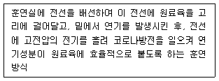
- 온훈법
- 냉훈법
- 전훈법
- 액훈법
(정답률: 67%)
63. 어육시료 25 g(어육시료의 총 수분 함량 15 g)을 취하여 원심분리방법에 의해 분리된 육즙의 양이 5 mL이었다면 보수력은? (단, 육즙 중 수분비는 0.951로 계산한다.)
- 53.3 %
- 58.3 %
- 63.3 %
- 68.3 %
(정답률: 36%)
64. 적색육, 뼈, 껍질 등을 분리ㆍ제거하고 백색육을 주원료로 살쟁임하여 제조하는 어류 통조림은?
- 고등어 보일드 통조림
- 꽁치 보일드 통조림
- 정어리 가미 통조림
- 참치 기름담금 통조림
(정답률: 69%)
65. 망목(網目)모양으로 작은 구멍이 뚫려있는 회전원반 위에 어체를 얹고, 이 회전원반에 대해서 수직상하운동을 하는 압착반으로 어체를 압착하여 채육(採肉)하는 방식은?
- 롤식
- 스탬프식
- 스크루식
- 플레이트식
(정답률: 80%)
66. 고등어 보일드 통조림의 제조를 위해 사용되는 기계를 모두 고른 것은?
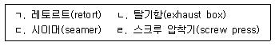
- ㄱ, ㄴ
- ㄷ, ㄹ
- ㄱ, ㄴ, ㄷ
- ㄱ, ㄴ, ㄷ, ㄹ
(정답률: 47%)
67. 다음은 어떤 수산물 가공기계를 설명하는 것인가?
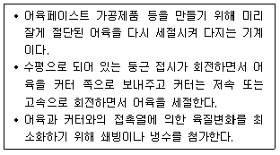
- 탈수기(dehydrator)
- 육만기(meat chopper)
- 육정제기(meat refiner)
- 사일런트 커터(silent cutter)
(정답률: 79%)
68. 증기 압축식 냉동기가 냉동품을 제조하기 위하여 냉동사이클을 수행할 때 작동되는 순서가 옳게 나열된 것은?
- 압축기 - 응축기 - 팽창밸브 - 증발기
- 압축기 - 팽창밸브 - 응축기 - 증발기
- 팽창밸브 - 압축기 - 증발기 - 응축기
- 응축기 - 증발기 - 압축기 - 팽창밸브
(정답률: 57%)
69. HACCP에 관한 설명으로 옳지 않은 것은?
- 사전에 위해요소를 확인ㆍ평가하여 생산과정 등을 중점 관리하는 기준이다.
- 어육소시지는 HACCP 의무적용품목이다.
- 정부주도형 사후 위생관리 제도이다.
- 위해요소분석과 중요관리점으로 구성된다.
(정답률: 72%)
70. 육상어류 양식장이 준수하여야 하는 HACCP 선행요건에 해당하는 것을 모두 고른 것은?
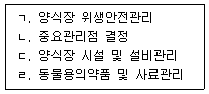
- ㄱ, ㄴ
- ㄴ, ㄷ
- ㄱ, ㄷ, ㄹ
- ㄴ, ㄷ, ㄹ
(정답률: 60%)
71. 어묵 제조의 성형 공정에서 이물 불검출을 기준으로 설정하는 것은 HACCP의 7원칙 중 어느 단계에 해당하는가?
- 중요관리점의 한계기준 결정
- 중요관리점별 모니터링 체계 확립
- 잠재적 위해요소 분석
- 공정 흐름도 현장 확인
(정답률: 43%)
72. 장염 비브리오 균(Vibrio parahaemolyticus)에 관한 설명으로 옳지 않은 것은?
- 독소형 식중독균으로 치사율이 높다.
- 어패류를 충분히 가열하지 않고 섭취하는 경우에 감염될 수 있다.
- 주요 증상은 설사와 복통이며, 환자 중 일부는 발열ㆍ두통ㆍ오심이 나타난다.
- 호염균으로 바닷가 연안의 해수, 해초, 플랑크톤 등에 분포한다.
(정답률: 80%)
73. 수산물로부터 감염되는 기생충에 해당하지 않는 것은?
- 간흡충(간디스토마)
- 폐흡충(폐디스토마)
- 고래회충(아니사키스)
- 무구조충(민촌충)
(정답률: 74%)
74. 독소보유생물과 독소의 연결이 옳지 않은 것은?
- 포도상구균 - enterotoxin
- 뱀장어 - saxitoxin
- 보툴리누스균 - neurotoxin
- 복어 - tetrodotoxin
(정답률: 80%)
75. 유해 중금속에 의한 식중독에 관한 설명으로 옳지 않은 것은?
- 식품공전에는 수산물 중 연체류에 대해 수은, 납, 카드뮴 기준이 설정되어 있다.
- 수은 중독시 사지마비, 언어장애 등을 유발하며, 임산부의 경우 기형아 출산의 원인이 된다.
- 납 중독시 신장 장애를 유발하며, “미나마타병”이라고도 한다.
- 카드뮴 중독시 관절 통증을 유발하며, “이타이이타이병”이라고도 한다.
(정답률: 80%)
4과목: 수산일반
76. 수산자원관리법상 용어에 관한 정의로 옳지 않은 것은?
- “수산자원”이란 수중에 서식하는 수산동식물로서 국민경제 및 국민생활에 유용한 자원을 말한다.
- “수산자원관리”란 수산자원의 보호ㆍ회복 및 조성 등의 행위를 말한다.
- “총허용어획량”이란 포획ㆍ채취할 수 있는 수산동물의 종별 연간 어획량의 최고한도를 말한다.
- “바다숲”이란 수산자원을 조성한 후 체계적으로 관리하여 이를 포획ㆍ채취하는 장소를 말한다.
(정답률: 74%)
77. 다음에서 설명하는 어업은?
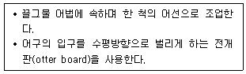
- 선망
- 자망
- 봉수망
- 트롤
(정답률: 69%)
78. 자원 관리형 어업과 관련된 내용으로 옳지 않은 것은?
- 대상 생물의 생태를 파악한다.
- 지속가능한 어업을 영위한다.
- 어선 및 어구의 규모와 수를 증가시킨다.
- 자원을 합리적으로 이용한다.
(정답률: 82%)
79. 2019년도 우리나라 수산물 생산량이 많은 것부터 적은 순으로 옳게 나열된 것은?
- 원양어업 > 천해양식어업 > 내수면어업 > 일반해면어업
- 원양어업 > 내수면어업 > 천해양식어업 > 일반해면어업
- 천해양식어업 > 원양어업 > 일반해면어업 > 내수면어업
- 천해양식어업 > 일반해면어업 > 원양어업 > 내수면어업
(정답률: 50%)
80. 수산업의 발달에 관한 내용으로 옳은 것은?
- 수산물을 가공한 가장 원시적인 형태는 훈제품이다.
- 유엔해양법 협약에 따라 연안국들은 경제수역 200해리 내에서 자원의 주권적인 권리를 행사할 수 있게 되었다.
- 1960년대 우리나라는 연안국 어업규제 등으로 수산업의 성장이 둔화되기 시작하였다.
- 우리나라 양식업이 대규모로 발전한 시기는 가두리식 김양식이 시작된 후부터이다.
(정답률: 50%)
81. 현재 국내 새우류 중 양식생산량이 가장 많은 것은?
- 대하
- 젓새우
- 보리새우
- 흰다리새우
(정답률: 86%)
82. 경골 어류에 해당하지 않는 것은?
- 고등어
- 참돔
- 전어
- 홍어
(정답률: 79%)
83. 어류의 체형과 종류의 연결이 옳지 않은 것은?
- 방추형 - 방어
- 측편형 - 감성돔
- 구형 - 개복치
- 편평형 - 아귀
(정답률: 67%)
84. 연체동물(문)이 아닌 것은?
- 전복
- 피조개
- 해삼
- 굴
(정답률: 87%)
85. 수산자원의 계군을 식별하는데 형태학적 방법으로 이용되는 것을 모두 고른 것은?
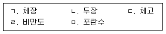
- ㄱ, ㄴ, ㄷ
- ㄱ, ㄷ, ㅁ
- ㄴ, ㄹ, ㅁ
- ㄷ, ㄹ, ㅁ
(정답률: 75%)
86. 함정 어구ㆍ어법에 해당하지 않는 것은?
- 쌍끌이기선저인망
- 통발
- 정치망
- 안강망
(정답률: 80%)
87. 우리나라 동해안의 주요 어업을 모두 고른 것은?
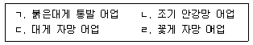
- ㄱ, ㄴ
- ㄱ, ㄷ
- ㄴ, ㄷ
- ㄴ, ㄹ
(정답률: 67%)
88. 다음은 멸치에 관한 설명이다. ( )에 들어갈 내용을 순서대로 옳게 나열한 것은?
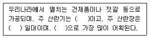
- 봄, 동해안, 정치망
- 봄, 남해안, 기선권현망
- 여름, 남해안, 죽방렴
- 여름, 동해안, 안강망
(정답률: 86%)
89. 다음에서 설명하는 어장의 물리적 환경요인은?
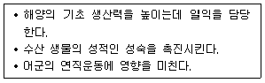
- 빛
- 영양염류
- 용존산소
- 수소이온농도
(정답률: 59%)
90. 양식장의 환경 특성에 관한 설명으로 옳지 않은 것은?
- 개방적 양식장은 인위적으로 환경요인을 조절하기 쉽다.
- 개방적 양식장은 외부 수질환경과 자유로이 소통한다.
- 폐쇄적 양식장은 지리적 위치에 상관없이 특정 수산생물 양식이 가능하다.
- 폐쇄적 양식장은 외부환경과 분리된 공간에서 인위적으로 환경요인의 조절이 가능하다.
(정답률: 87%)
91. 전복을 증식 또는 양식하는 방법으로 옳지 않은 것은?
- 바닥식
- 밧줄식
- 해상가두리식
- 육상수조식
(정답률: 47%)
92. 양식과정에서 각포자와 과포자를 관찰할 수 있는 해조류는?
- 김
- 미역
- 파래
- 다시마
(정답률: 74%)
93. 우리나라에서 가장 오래된 양식 역사를 가지며 사료를 하루에 여러 번 나누어 주는 어류는?
- 잉어
- 넙치
- 참돔
- 방어
(정답률: 69%)
94. 양식생물이 다음과 같은 상황과 증상일 때 올바른 진단은?
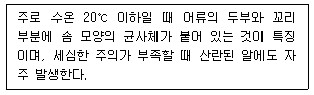
- 물이(Argulus) 기생
- 바이러스 질병 감염
- 백점충 기생
- 물곰팡이 감염
(정답률: 75%)
95. 양식생물에 기생하여 피해를 주는 기생충이 아닌 것은?
- 점액포자충
- 아가미흡충
- 케토세로스
- 닻벌레
(정답률: 71%)
96. 다음 설명에서 공통으로 해당하는 양식 방법은?
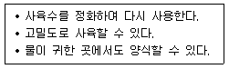
- 지수식 양식
- 유수식 양식
- 가두리식 양식
- 순환여과식 양식
(정답률: 88%)
97. 패류 인공종자를 생산할 때 유생에 많이 공급하는 먹이생물은?
- 아이소크리시스(Isochrysis)
- 아르테미아(Artemia)
- 니트로박터(Nitrobacter)
- 로티퍼(Rotifer)
(정답률: 57%)
98. 면허어업에 해당하는 것은?
- 나잠어업
- 정치망어업
- 연안자망어업
- 대형저인망어업
(정답률: 54%)
99. 수산업법령상 어업과 관리제도가 옳게 연결된 것은?
- 맨손어업 - 허가어업
- 마을어업 - 신고어업
- 구획어업 - 허가어업
- 연안어업 - 신고어업
(정답률: 40%)
100. 어류의 생활사 중 해수와 담수를 왕래하는 어종의 관리를 위하여 설립된 국제수산관리 기구는?
- 전미 열대 다랑어 위원회(IATTC)
- 태평양 연어 어업 위원회(PSC)
- 국제 포경 위원회(IWC)
- 태평양 넙치 위원회(IPHC)
(정답률: 67%)